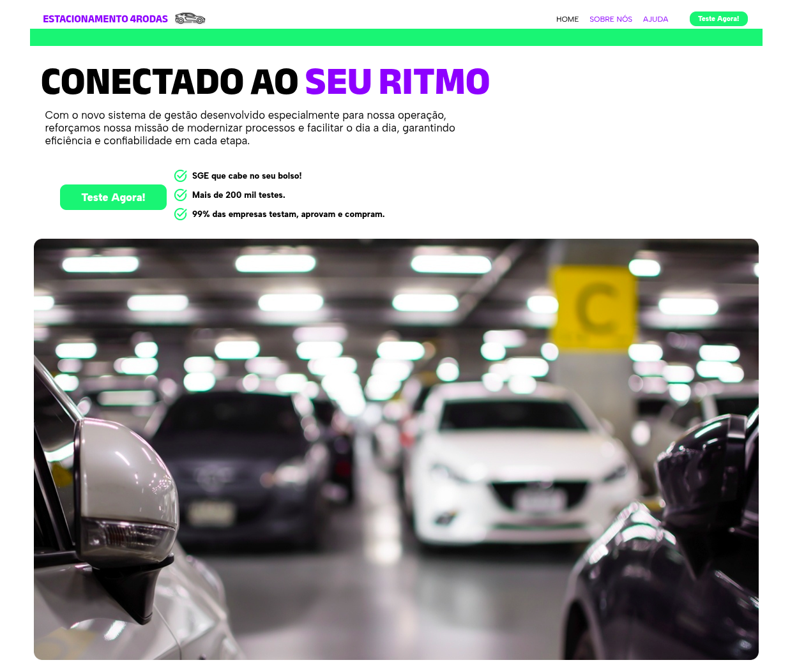

ESTACIONAMENTO 4RODAS — Sistema de Gestão de Estacionamento
Projeto Integrador composto por uma aplicação desktop em JavaFX e uma landing page estática de divulgação.
O sistema gerencia o fluxo de entrada e saída de veículos, aplica regras de cobrança automatizadas
(R$ 10,00 na primeira hora + R$ 5,00 por hora subsequente, com tolerância de 5 minutos) e persiste os
dados em arquivos CSV separados por veículos ativos e histórico de saídas.
A landing page foi desenvolvida com HTML5, CSS3 responsivo e Google Fonts, com identidade visual
em roxo e verde, estruturada para conversão com CTAs, seção de vantagens e apresentação da equipe.
Stack: JavaFX (desktop) · HTML5 · CSS3 · CSV (persistência) ; Equipe: 3 desenvolvedores — FullStack, Front-end/Design e Back-end